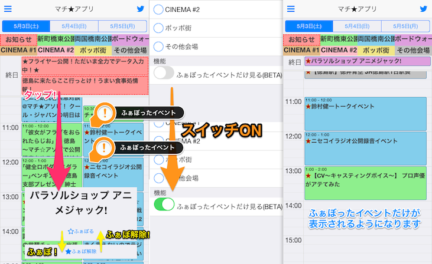

<ons-page class="center">
    <ons-scroller class="center">
        <ons-button
                type="large"
                ng-click="ons.screen.dismissPage()">
            この画面を閉じる
        </ons-button>

        <div class="markdown">
            <h1>変更履歴</h1>
            <p>この画面は重要なアップデートがあったときに表示されます。<br>
                ヘルプ画面からこのページを再確認することが出来ます。</p>

            <h2>ver. 0.6.0</h2>
            <h3>イベントをふぁぼる機能を追加しました！</h3>
            <p>ふぁぼ機能は、「このイベントは行く！」というようなイベントに<strong>星(ふぁぼ)を付け、ふぁぼったイベントのみを閲覧できる</strong>機能です。</p>
            <p>ふぁぼったイベントは以下のようにマチ★アソビカラーの星が付きます。</p>
            
            <p>ふぁぼったイベントだけを抽出してカレンダー上に表示することで、マチ★アソビの戦略が立てやすくなる、かも知れません。</p>
            <p>PCでの動作を確認しましたが、スマートフォンでの性能調査を行うため、しばらくは試験運用します。</p>
            <p><strong>ふぁぼ機能は、ふぁぼを行った端末外に共有されません(ふぁぼを行った端末でのみ確認できる)のでご注意ください。</strong></p>

            <h2>ver. 0.5.0</h2>
            <h2>「終日イベント」をデフォルトで表示しないようにしました。</h2>
            
            <p>今回のマチ★アソビは終日イベントがたくさんありすぎて画面内に収まらなくなりました。</p>
            <p>そこで、今回のアップデートにより<strong>デフォルトで終日イベントを隠すようにしました</strong>。</p>
            <p>では終日イベントを見たいときはどうすれば良いでしょうか？<br>
                答えは、「カレンダースイッチ」があるメニューの下部にある「終日イベントを表示する」をONにします。</p>
            <p>これで、終日イベントが表示されるようになります。</p>
            <p>また、項目数が非常に多くなっておりますので、カレンダースイッチをうまく活用してください！</p>
        </div>

        <ons-button
                type="large"
                ng-click="ons.screen.dismissPage()">
            この画面を閉じる
        </ons-button>
    </ons-scroller>
</ons-page>